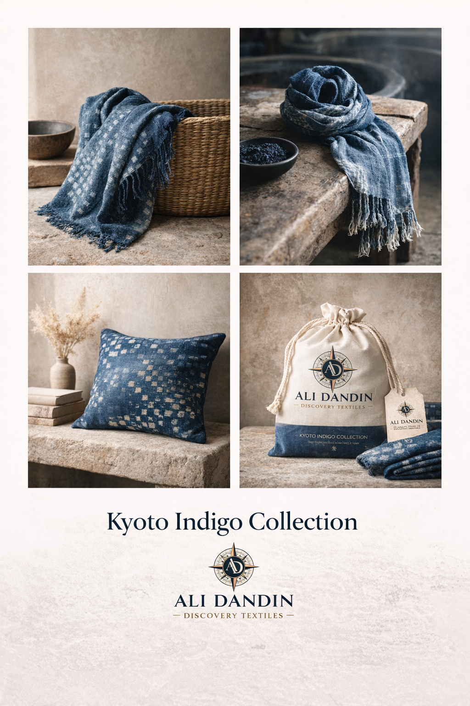
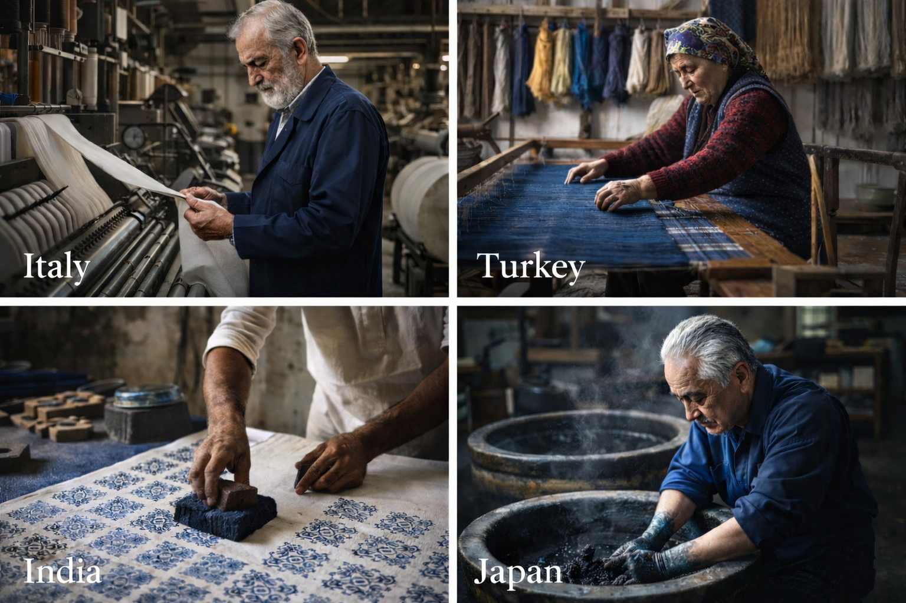
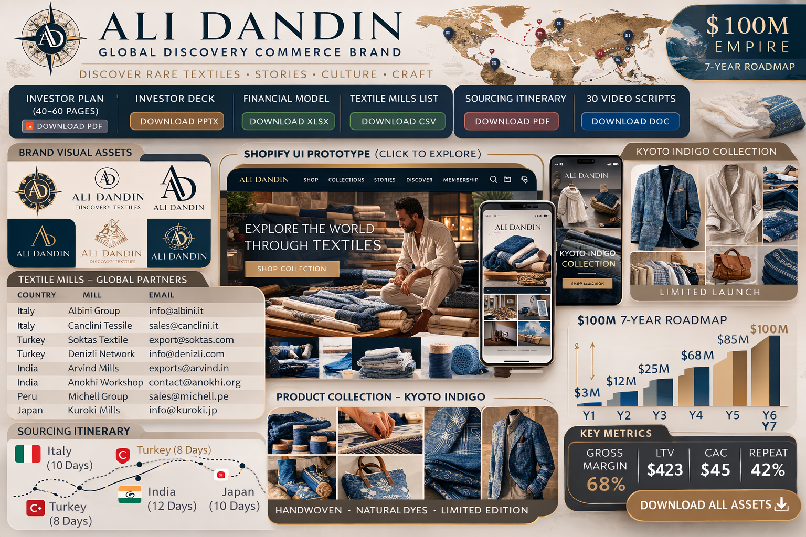
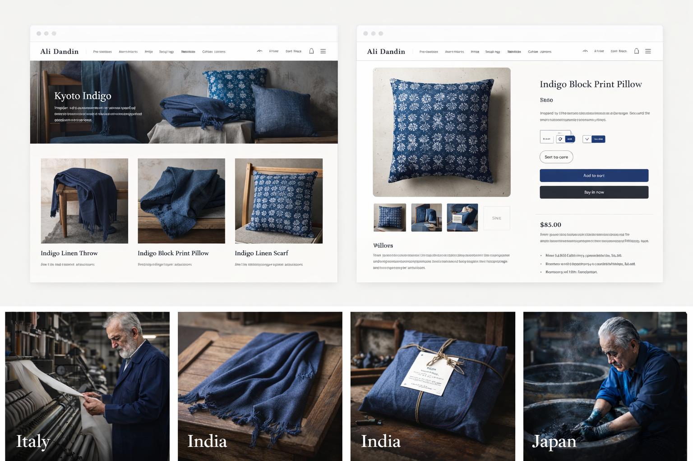
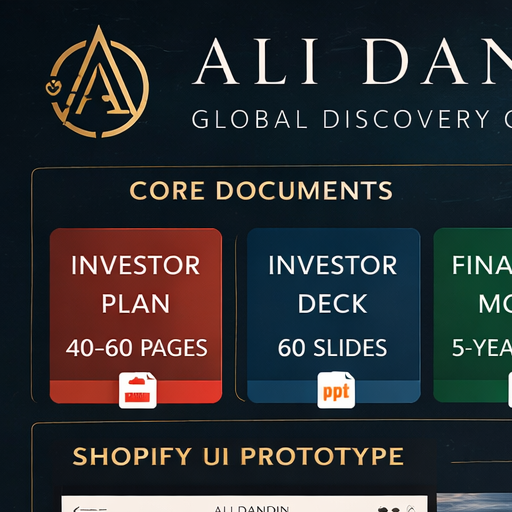
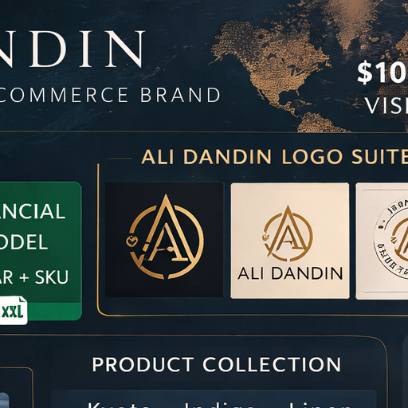
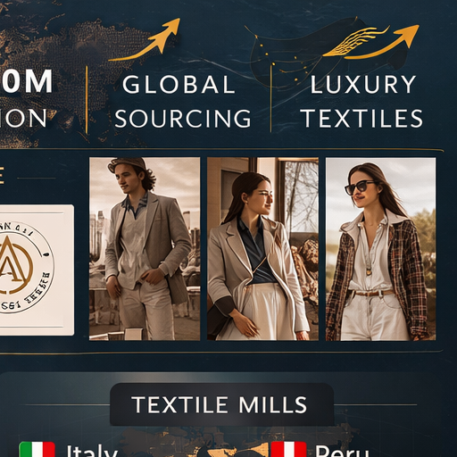
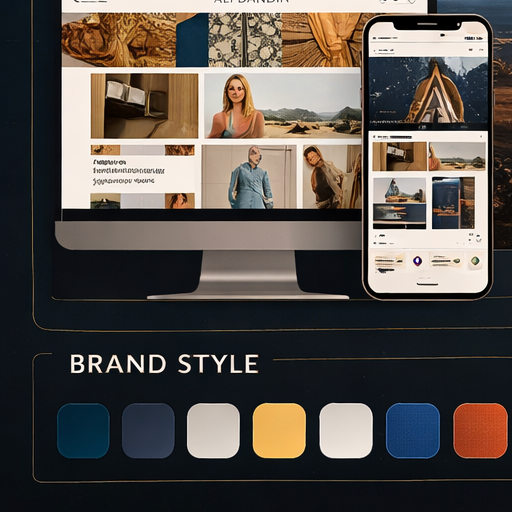
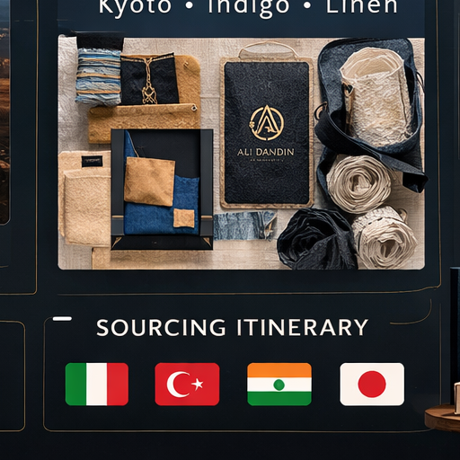
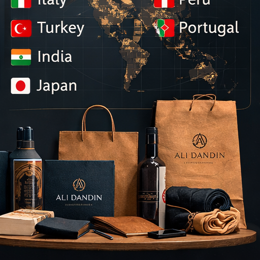

Consumers want objects with origin and taste, but most marketplaces flatten both into commodity product.
Textile-led global discovery brand
Ali Dandin, reframed as a premium textile authority.
This handoff replaces the earlier canvas workflow with one local site that is readable, visual, and durable. It keeps the surviving assets, cuts the filler, and turns the project into a usable brief for brand, product, ecommerce, sourcing, and fundraising work.
Core thesis: Ali Dandin should launch as a destination-led textile discovery brand. Travel and storytelling are support systems. The moat is judgment in material, sourcing, and curation.
Switch perspective
What this page does
- Uses the actual local images and docs that are in the folder now.
- Separates investor-facing story from internal build guidance.
- Flags what exists, what is thin, and what still needs real production.
4 core visuals
Logo suite, homepage mockup, Kyoto Indigo board, and sourcing overview are embedded below.
3 supporting docs
PDF, deck, and spreadsheet are locally present but remain lightweight placeholders.
1 canonical direction
The site now treats textiles as the official wedge, not broad travel merch.
Archive retained
Composite boards and slices are preserved late in the page instead of driving the story.
Shared
File Index
What the page can actually reference from the current folder, normalized into stable names.
| Canonical asset | Type | Status | Purpose |
|---|---|---|---|
investor_business_plan.pdf |
Present locally, minimal | One-page business-plan placeholder. | |
investor_deck.pptx |
PPTX | Present locally, minimal | Eight-slide outline deck. |
financial_model.xlsx |
XLSX | Present locally, minimal | One-sheet monthly model stub. |
logo_suite.png |
PNG | Present locally | Combined brand mark board. |
shopify_homepage.png |
PNG | Present locally | Homepage reference for the storefront direction. |
kyoto_indigo_collection.png |
PNG | Present locally | Hero collection board for the launch assortment. |
global_sourcing_overview.png |
PNG | Present locally | Four-market sourcing visual. |
archive/ |
PNG set | Archive only | Composite boards and slice artifacts from the earlier workflow. |
Shared
Summary
Same brand, different lens: investor view highlights the thesis; internal view highlights what is actually build-ready.
This brand works because it narrows from generic travel commerce to a stronger claim: Ali Dandin discovers, curates, and eventually designs premium textiles with place, process, and story built in.
Destination-led textile collections paired with story, curation, and an editorial storefront.
Ali’s textile background supports sourcing judgment, supplier language, and product credibility.
Enough visual material exists to frame the brand, but the investor docs still need real depth.
The project now has one usable logo board, one storefront mockup, one collection board, one sourcing visual, and three thin docs. That is enough to align the direction, but not enough to ship a polished brand system.
Visual concept set for brand, homepage, collection, and sourcing.
Standalone logo exports, collection/product screens, verified sourcing sheet, and a real financial model.
Turn Kyoto Indigo and the homepage direction into a functioning Shopify MVP.
Do not broaden the category set before the textile wedge is proven and visual assets are production-ready.
Shared
Brand Identity
The visual and verbal frame is premium, traveled, and materially literate rather than trendy or souvenir-led.
Position the brand as the world’s textile discovery brand. The tone should feel calm, exacting, and editorial. Midnight blue, sand, and cream hold the system together, with terracotta or olive used sparingly. The headline voice should sound like a curator with taste, not a hype-forward DTC founder.
Compass-led wordmark for storefront, packaging, and brand headers.
Small-format mark for social avatars, tags, and future favicon use.
Useful collection stamp for destination pages, inserts, and drop graphics.
Symbolic brand emblem linking geography, material, and discovery.
Standalone logo exports are still planned. The combined board should not be treated as a finished brand package.
Shared
Collection System
Launch with one coherent destination collection instead of a wide, mixed catalog.
Kyoto Indigo is the right opening move because it already has the strongest visual cohesion in the project and maps directly to the textile-led thesis. It gives the brand an immediate point of view: material, dye, craft, and origin all read clearly without requiring explanation-heavy merchandising.

- Indigo Linen Throw
- Indigo Scarf
- Indigo Pillow
- Indigo Textile Set
- Name by destination and material, not by generic ecommerce convention.
- Keep every product tied to process, place, and use.
- Let packaging reinforce origin and limited-release value.
- Do not imply separate SKU photos exist until they do.
Investor
Investment Case
The brand is more compelling as a specialized authority than as a generic travel store.
Premium textiles offer a cleaner bridge between story, margin, repeatability, and eventual private label expansion.
Content creates trust, trust drives curated drops, drops generate proof, and proof deepens content.
Collections first, then membership, collaborations, selective licensing, and retail partnerships.
The concept is investable as a story, but the financial and deck materials still need real build-out.
What makes the thesis defendable is not just travel content. It is the combination of curation taste, textile expertise, supplier fluency, and an ability to turn those into premium, place-led collections. The long-term value is not merely product margin. It is brand trust around material discovery.
Internal
Commerce Build
The site should feel editorial and premium, not like a rushed Shopify catalog.
The homepage comp is strong enough to guide the build: large textile imagery, one featured collection, one artisan story block, and a compact product grid. Use that as the template rather than inventing a broader navigation system.

- Homepage
- Kyoto Indigo collection page
- Four product detail pages
- Basic Passport Club capture
- Standalone collection page mockup
- Standalone product page mockup
- Mobile-specific UI set
- Reusable component system
Use the current homepage as the visual north star, but do not overfit the build to a single generated mockup.
Internal
Sourcing System
The early sourcing process should optimize for authenticity, documentation, and low-regret first orders.
Early collections should follow a simple pattern: discover, document, sample, small-batch test, then restock or scale only after demand is visible. The brand should resist building a broad supplier network before it has proof that the storytelling and product mix actually convert.

Premium linen and finishing credibility. Strong later-stage partner region.
Practical manufacturing depth for cotton, towels, throws, and scalable textile categories.
Rich process story: block printing, handloom, cotton, and craft-forward flexibility.
Hero region for indigo, heritage process, and the first premium collection story.
Future expansion region for alpaca, wool, and colder-climate luxury textiles.
Internal
Mills & Itinerary
Targets from the conversation are retained here as planning inputs, not as verified active supplier intelligence.
- Italy: Albini Group, Canclini Tessile
- Turkey: Soktas Textile, Denizli textile network
- India: Arvind Mills, Anokhi workshops
- Peru: Michell Group
- Japan: Kuroki Mills, Kyoto heritage textile studios
- Document maker, process, region, and product category.
- Test categories that travel and fulfill cleanly.
- Start with sample orders and story capture.
- Keep one lead collection per region, not a random assortment.
Milan for context, Prato or mill districts for production, Florence for workshop and finishing references.
Istanbul for markets, Denizli for textile production, supplier conversations, and sampling.
Jaipur for block print and handloom, then larger mill context via Delhi or Ahmedabad.
Kyoto for indigo and heritage process, Osaka or Tokyo for supplier and logistics support.
Shared
Financials & Downloads
The normalized business model plus the three local files that currently survive as supporting documents.
The economic story is straightforward: use story-led textile drops to establish proof, then expand into repeat collections, private label, and selective partnerships once audience trust and supply discipline are visible.
The local documents are enough to anchor the handoff, but none of them should be treated as final operating tools. The next team still needs to rebuild the plan, the deck, and the model at production depth.
assets/docs/investor_business_plan.pdf
Useful as proof that a file exists locally; not useful yet as a true investor-grade plan.
Download PDFassets/docs/investor_deck.pptx
Real structure, minimal depth. Good for framing the story; not yet a presentation-ready deck.
Download PPTXassets/docs/financial_model.xlsx
Short monthly table only. The eventual model still needs multi-year, multi-scenario depth.
Download XLSXCollections first, then membership, collaborations, private label, and eventually licensing.
Premium textile framing supports stronger pricing than generic travel-sourced goods.
Content → trust → drop → repeat purchase → broader authority.
A true multi-year workbook and investor-grade long-form plan are still missing.
Investor
Growth Roadmap
The brand becomes more valuable as it moves from discovery into authority and then into systems that scale.
Launch with destination-led textile collections, strong editorial storytelling, and a narrow assortment.
Repeat collections, improve supplier discipline, and introduce selective private label development.
Expand into bedding, throws, home textiles, licensing, and prestige retail if the brand earns the right.
A trusted discovery platform with product, media, and partnership leverage around textiles and culture.
The long-term upside is not just selling premium goods. It is owning a point of view consumers and partners trust when they want taste, provenance, and material literacy in one place.
Internal
Execution Priorities
What the next team should actually do, in order, without changing the underlying asset structure.
- Export the four logo marks as standalone production files.
- Turn the homepage comp into a real Shopify theme implementation.
- Build Kyoto Indigo as one live collection with four products.
- Create actual collection and product page screens, not just homepage direction.
- Replace conceptual sourcing visuals with real maker and workshop documentation.
- Rebuild the business plan, deck, and financial model at the depth originally promised.
Brand exports, storefront MVP, one collection, basic email capture, and clean product storytelling.
Broader categories, retail conversations, and licensing thinking until the first collection and brand system are real.
Internal
Asset Register
Canonical mapping between the handoff page and the actual files now stored under handoff/assets.
| Canonical asset | Source file | Type | Section | Status | Notes |
|---|---|---|---|---|---|
logo_suite |
ChatGPT Image Mar 16, 2026, 09_53_25 PM.png |
PNG | Brand Identity | present locally | Combined board only; separate mark exports still planned. |
shopify_homepage |
ChatGPT Image Mar 16, 2026, 09_53_45 PM.png |
PNG | Commerce Build | present locally | Primary storefront reference. |
kyoto_indigo_collection |
ChatGPT Image Mar 16, 2026, 09_52_51 PM.png |
PNG | Collection System | present locally | Strongest product-facing visual in the folder. |
global_sourcing_overview |
ChatGPT Image Mar 16, 2026, 09_52_45 PM.png |
PNG | Sourcing System | present locally | Directional sourcing visual, not documentary proof. |
investor_business_plan.pdf |
Ali_Dandin_Investor_Business_Plan.pdf |
Financials & Downloads | present locally, minimal | One-page placeholder. | |
investor_deck.pptx |
Ali_Dandin_Investor_Deck.pptx |
PPTX | Financials & Downloads | present locally, minimal | Eight-slide outline deck. |
financial_model.xlsx |
Ali_Dandin_Financial_Model.xlsx |
XLSX | Financials & Downloads | present locally, minimal | One-sheet monthly model stub. |
primary_logo |
None | Planned | Brand Identity | planned | Only exists inside the combined logo board. |
collection_page_screen |
None | Planned | Commerce Build | planned | No standalone collection screen is present locally. |
product_page_screen |
None | Planned | Commerce Build | planned | No standalone product screen is present locally. |
archive/* |
master_board.png, mixed_asset_board.png, slices |
PNG set | Appendix A | archive only | Preserved for traceability, not primary narrative use. |
Internal
Appendix A: Generated Asset Archive
Artifacts kept for reference after the earlier oversized-board and repeat-generation loop.
Composite boards

master_board.png — original giant collage.
mixed_asset_board.png — mixed UI/product/sourcing board.Oversized board slices

slice_0_0.png
slice_0_1.png
slice_0_2.png
slice_1_0.png
slice_1_1.png
slice_1_2.png
Internal
Appendix B: Delivery Audit
Short factual record of what the folder contains versus what earlier responses said existed.
- The folder now contains real local files, but the PDF, deck, and spreadsheet are still thin placeholders.
- The image workflow produced both strong assets and archive clutter; this page promotes the strong assets and demotes the clutter.
- The current handoff is durable because it references files that are actually present under
handoff/assets. - What remains missing is mainly production depth: separated logo exports, deeper ecommerce screens, verified sourcing data, and real finance docs.